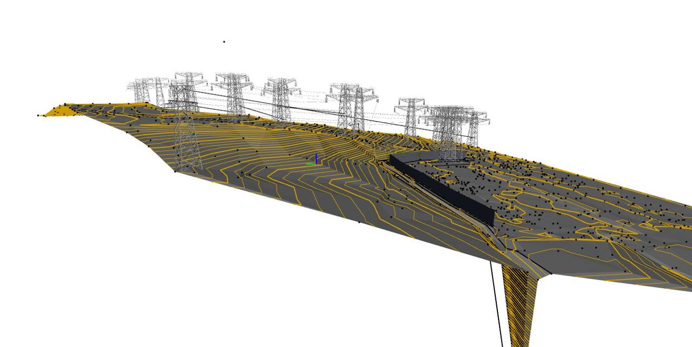

Где и для чего используется ЦММ
Цифровая модель местности (ЦММ) — ключевой элемент инженерных изысканий, который применяется для точного проектирования и прохождения экспертизы проектной документации.
Основные случаи использования ЦММ:
Проектирование объектов капитального строительства: Автоматизированная разработка проектов для зданий и инженерных сооружений.
Картографирование рельефа: Оперативное создание карт с детальной информацией о высотах, рельефе и перепадах.3D-моделирование: Создание трёхмерных моделей с возможностью анализа участков, что необходимо для усиления грунтов и оптимизации земляных работ.
Вертикальная планировка: Проектирование по фактическим данным рельефа для точного планирования строительных площадок.
Топографическая съёмка: Оформление высокоточных карт с наложением горизонталей.
Экологические парметры: Оформление карт с наложением зон экологических ограничений и мест загрязнений в пределах диапазона отметок поверхности существующего рельефа.
Расчёт рентабельности: Определение стоимости подготовки площадки и расчёты для обеспечения баланса земляных масс.
Инженерные коммуникации: Прокладка подземных коммуникаций с соблюдением точных координат и нормативов.
Техническая документация: Подготовка текстовых и графических материалов для согласования в составе исходно-разрешительной документации.
ЦММ исключает ошибки человеческого фактора благодаря высокой автоматизации и точности оборудования, что делает её незаменимой для успешной реализации проектов.
Для объектов капитального строительства в Санкт-Петербурге результаты инженерных изысканий должны в обязательном порядке содержать цифровую модель местности для всех изысканий в соответствии с требованиями ЦГЭ.ЦИМ.РИИ-1.0.